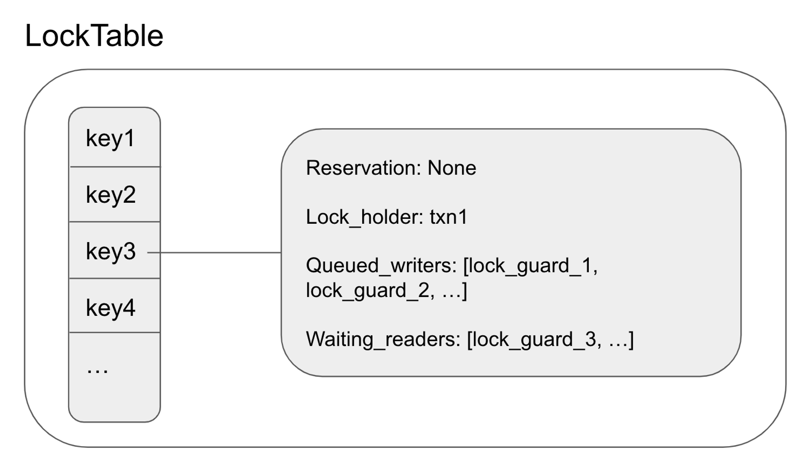

Lock Table
The lock table maintains a set of locks that are held by pending transactions. Each lock in the table contains a wait-queue, where conflicting transactions can queue onto and wait until the lock has been released. In contrast to latches, which exist only for the duration of a request, locks are held for the lifetime of a transaction which may span multiple requests.
As we noted before, each key can only have one uncommitted intent at a time. The lock table guarantees this invariant by ensuring that conflicting transactions are queued while an uncommitted intent is unresolved.
Lock Table API
Scan_and_enqueue: (request, txn) → (bool, LockTableGuard)
This method loops over the keys that the request will access. If it finds a lock for one of the keys, it enqueues the request onto the lock and terminates - returning true and a lock table guard. Returning true here means that the thread needs to wait until the lock is released. Returning false here means that no conflicting locks are detected, and the request is free to perform the writes.
It’s important to note that the latches for the corresponding keys must be held when calling this function.
Wait_for: (lock_table_guard) → Result<(), Error>
This method takes a lock guard and waits until the queued request is at the front of the wait queue. This means that the request is safe to re-acquire latches and rescan the lock table to find any other conflicting locks. This method is also responsible for pushing the transaction if it times out, which may be due to deadlocks.
It’s important to note that this method must be called after latches are dropped.
Add_discovered_lock: (lock_table_guard, txn_intent) → ()
This method is called when an uncommitted intent is discovered during a read or write. It adds the lock guard of the request that found the intent to the wait queue.
Acquire_lock: (key, txn) → ()
This method is called after a write intent is created. It informs the lock table that a new lock has been acquired and other requests need to wait until the lock is released.
It’s important to note that the latch for the key must be held when this method is called.
Dequeue: (lock_table_guard) → ()
This method removes the request from the lock’s wait queues. Note that this method doesn’t release the lock. The only way to release the lock is when the transaction aborts or commits, which resolves the write intent.
Note that latches may or may not be held for this method to be called.
Update_locks: (key, update_lock) → ()
This method updates the lock table when the lock is updated or released, which happens when the transaction has been committed or aborted. This function frees all the queued readers and the first queued writer.
Lock State
Conceptually, Lock Table is just a map from keys to lock states.
Each Lock State contains the queued readers and writers for the lock. This is the struct:
#![allow(unused)] fn main() { pub struct LockState { pub lock_holder: Arc<RwLock<Option<TxnMetadata>>>, pub reservation: Arc<RwLock<Option<LockTableGuardLink>>>, pub queued_writers: Arc<RwLock<Vec<LockTableGuardLink>>>, pub waiting_readers: Arc<RwLock<Vec<LockTableGuardLink>>>, pub last_committed_timestamp: RwLock<Option<Timestamp>>, } }
The lock holder represents whether the lock is held by a transaction. If there is a lock holder, then there is an unresolved uncommitted intent.
Even when the lock_holder is None, which means that the uncommitted intent has been resolved, the lock state may not be cleaned up. This is because there may be pending requests that may add uncommitted intents.
Pending requests take the form of a lock table guard. These requests need to wait for their turn. Read-only requests are placed inside the waiting_readers and write requests are placed inside queued_writers.
When the uncommitted intent has been resolved, all waiting_readers may be released. The reason that all readers can be released is that readers only need to wait if the uncommitted write intent has a smaller timestamp to prevent read-write conflicts. If the read request is able to acquire the latches and perform the read, the next uncommitted write intent will have a greater timestamp since it will consult the timestamp oracle.
On the other hand, only one queued_writers is released. This is because there can only be one uncommitted write intent at a time, so releasing all the writers at once will likely result in conflicts again. When a queued writer is released, it is appointed to be the reservation. Reservation denotes that a write request is in progress and will create an uncommitted intent.
There are a few invariants for the lock state:
- a lock_holder and a reservation cannot exist at the same time
- if the lock_holder is
None, thenwaiting_readersmust be empty
Each lock table guard is 1-1 with a pending request. It’s an abstraction over a channel. A lock table guard has a corresponding receiver and a sender. The sender sends a message when the lock guard has been released. The receiver detects that the lock guard has been released and proceeds with the request.
Implementing the Lock Table API
Now that we know the data structure of the lock table, let’s revisit the API and briefly talk about how each method is implemented.
Scan_and_enqueue: (request, txn) → (bool, LockTableGuard)
This method loops through the request’s keys. If a lock state exists for the key, it checks if it needs to wait for the lock state. Here are the rules determining whether a request needs to wait:
- if a lock holder exists
- if the request is read-only, then it only needs to wait if the uncommitted intent’s timestamp is less than the read’s timestamp
- if the request belongs to the same transaction as the lock holder, it doesn’t need to wait.
- if a lock holder doesn’t exist
- if the request is read-only, it doesn’t have to wait
- If the lock state doesn’t have a reservation, the lock guard claims the reservation and doesn’t need to wait.
- if the reservation and the request belong to the same transaction, then it doesn’t need to wait.
If a request needs to wait, then it queues itself onto the queud_writers and waiting_readers.
Scan_and_enqueue returns true if it doesn’t have to wait for all the keys. Otherwise, it terminates early by returning false with a created lock guard.
Wait_for: (lock_table_guard) → Result<(), Error>
This method simply uses the lock state guard’s receiver to wait until the lock guard has been released. In the case of a deadlock, it detects the deadlock with a timer. In that case, it tries to push the transaction. This will be covered later.
Add_discovered_lock: (lock_table_guard, txn_intent) → ()
This method inserts a lock state into the lock table if one didn’t exist yet. It claims the lock holder. If the request that detected the uncommitted intent is a reader, it pushes itself onto the waiting_readers. Otherwise, it pushes itself onto the queued_writers.
Acquire_lock: (key, txn) → ()
This method updates the lock holder of the lock state. If a reservation exists or if a lock holder with a different transaction ID exists, then there is an error.
Dequeue: (lock_table_guard) → ()
This method removes itself as a reservation if it was the reserver. Otherwise, it removes itself from the queued_writers and waiting_readers.
Update_locks: (key, update_lock) → ()
This method sets the lock_holder to None. It then calls lock_is_free, which clears all waiting_readers and lets the first queued_writer claim itself as the reservation.
CockroachDB’s Implementation
My Lock Table API is very similar to CockroachDB’s Lock Table API, which consists of the same methods such as ScanAndEnqueue, Dequeue, AddDiscoveredLock, AcquireLock, etc.
Unlike my LockTable which uses a simple HashMap, CockroachDB’s lock state is stored in a btree. Other than that, the algorithms are quite similar.